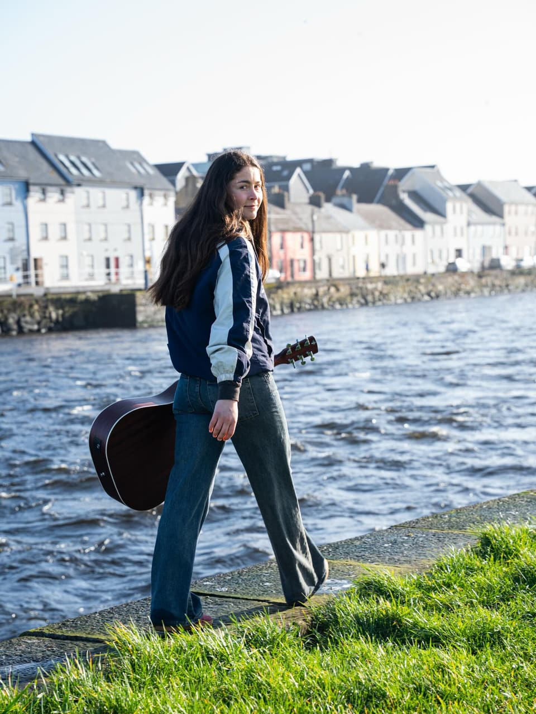

Will You Go, Lassie, Go
Cover

Honest pop from Galway, Ireland.
Singer-songwriter. Now working towards her debut record.
Ash Fuller is a pop singer-songwriter from Galway, Ireland. She started writing songs in a notebook, scribbling lyrics in secret and hiding the book so no one would ever see it.
Ash writes honest pop. Her lyrics aren't always sad, though she'd be the first to joke that they often are. She writes the kind of songs that make a listener pause and think "wow, that emotion... I know that feeling." She wants her music to be the place where people feel seen.
When Covid lockdown hit in 2020, Ash found herself stuck at home with little to do and a long-buried passion. She got her hands on some cheap recording equipment and, with her first microphone and no background in music production or mixing, released her debut piano ballad "Soulmate." It wasn't polished. It wasn't mastered. She didn't even know what mastering was. But it was a start.
Through her years at university, Ash kept music as her quiet passion, uploading the occasional track in her spare time. Towards the end of her studies, she began meeting people with industry experience and learning what it really takes to build a solid record from the ground up. In 2025, she released "Sunday Mourning". For the first time, she promoted her music openly. It gained traction across Ireland, earned local radio play, and Ash started to make a name for herself. Across the summers of 2024 and 2025, she could be found busking on the streets of Galway, a city known for its thriving performing-arts culture.
Alongside her work as Ash Fuller, she creates Irish-language music content for a growing online audience, covering popular songs translated into Irish, and original songs written in the language. In 2025, after a viral video of her ordering in Irish at Supermac's, the fast-food chain invited her to record their official jingle as Gaeilge for Seachtain na Gaeilge.
This has been her busiest year yet: a run of new singles including "Half the City", a spot at Dublin's Ruby Sessions, an unplanned moment on stage with Imelda May, and in November a sold-out first headline show at the Róisín Dubh in Galway.
In 2026, Ash was selected by Plaid Dog Records as part of their Rising Artist Search, and is now working towards her debut studio album: her first time stepping out of the bedroom and into a proper studio with a full team behind her. The album she always dreamed of making is finally on the horizon.
Ash sold out her first headline show at the Róisín Dubh, Galway, on 5 November 2026.
Invited up from the crowd at an Imelda May concert, Ash sang her own song "Half the City". Imelda told her it was a hit.
After a viral video of Ash ordering in Irish at Supermac's, the chain invited her to record their official Seachtain na Gaeilge jingle as Gaeilge.
Selected by Plaid Dog Records as part of their Rising Artist Search, Ash is working towards her debut studio album.
Ash has opened for Irish singer-songwriter Dawna.
Ash has played across Vancouver's Irish pub circuit, bringing Galway songwriting to Canadian audiences.
As featured in Galway Now, Connacht Tribune, Galway Pulse. Played on RTÉ 2FM and Galway Bay FM.